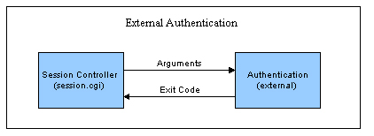

Como usar a autenticação externa ou o desvio da autenticação
Visão geral
Por padrão, a autenticação do Urchin é realizada quando o Controlador de sessão do Urchin (session.cgi) chama o binário "auth" localizado no diretório "bin" da Instalação do Urchin.Esse binário consulta o banco de dados de configuração e compara o nome de usuário e a senha fornecidos e armazenados na configuração.Um código de saída significando êxito ou falha é retornado ao Controlador de sessão.O local do binário de autenticação pode ser controlado com uma alteração na configuração.Esse design modular permite que os administradores chamem um programa de autenticação externo em vez do binário "auth" padrão.

Como mostra o diagrama acima, esse programa de autenticação externo poderia realizar qualquer função de autenticação desejada, incluindo chamadas "LDAP" e outras chamadas de banco de dados.Com a condição de que o programa seja executável pelo mesmo usuário com o qual "urchinwebd" (servidor da web Apache do Urchin) está sendo executado e que esteja em conformidade com os requisitos de entrada/saída, o Urchin pode ser facilmente modificado de maneira a usar um formato diferente de autenticação.
Como especificar a rotina de autenticação
Para configurar qual rotina de autenticação é chamada pelo Controlador de sessão, edite o arquivo "etc/session.conf", localizado na Instalação do Urchin.Esse arquivo contém parâmetros configuráveis que controlam o comportamento do Controlador de sessão, incluindo a rotina a ser chamada para autenticação.Edite a linha:
AUTHENTICATION: ../bin/auth
Substitua "../bin/auth" pelo caminho para a sua rotina de autenticação.Verifique se a rotina de autenticação é executável pelo mesmo usuário com o qual o "urchinwebd" é executado.
Requisitos de entrada/saída
Quando o Controlador de sessão chamar a rotina de autenticação, ele irá transferir o nome do usuário, a senha e o endereço IP remoto do usuário como argumentos de linha de comando, como:
argv[1] = username
argv[2] = password
argv[3] = remote_addr
A rotina de autenticação externa poderia optar por ignorar qualquer um desses parâmetros ou todos eles.Mas, as rotinas de autenticação típicas irão pelo menos observar os dois primeiros.Depois de realizar toda a autenticação desejada, a rotina será finalizada com um código igual a zero para representar êxito e -1 para representar uma falha.
Exit Code
0 = successful authentication
-1 = authentication failed
A interface de autenticação acima permite que os administradores personalizem facilmente suas próprias rotinas para a validação de logins do usuário.
Como ignorar a autenticação
Usando as técnicas acima, a autenticação do Urchin pode ser intencionalmente ignorada.No caso de um provedor de hospedagem querer usar o Sistema Urchin inteiro para controlar usuários e grupos, mas já tiver autenticado o usuário no momento em que este acessar o Urchin, o desvio da autenticação será uma boa opção para evitar um login duplo.Desde que o host possa garantir que o acesso ao Sistema Urchin seja controlado a partir de um portal de autenticação e que o nome do usuário não possa ser adulterado, o host poderá ignorar a autenticação usando a técnica a seguir.
Para ignorar a autenticação, crie uma rotina de autenticação externa fictícia que sempre seja finalizada com um zero.Por exemplo, o código perl pode ser:
#!/usr/bin/perl
exit(0);
Aponte o Controlador de sessões nessa rotina de autenticação fictícia editando o arquivo "etc/session.conf" de modo que ele aponte para essa rotina fictícia, conforme descrito a seguir.Em seguida, basta fornecer um link semelhante a:
http://hostname:9999/session.cgi?action=login&user=paul
Modifique o link acima de forma que ele aponte para o nome do host e a porta reais e modifique o usuário de acordo com o nome de usuário ou a variável que você desejar.A rotina de autenticação fictícia aprovará esse login automaticamente.Use esse método com cautela, para evitar problemas de segurança.
Nota para usuários do Windows
Para fornecer uma funcionalidade semelhante em ambientes Windows nos quais o Perl não está instalado, um simples binário noauth.exe está disponível na área "Scripts auxiliares" do site de Suporte do Urchin.Esse binário é simplesmente um "no-op" e apenas retorna um status de êxito ao ser chamado.Lembre-se de compreender as implicações de segurança envolvidas antes de implementar essa solução.